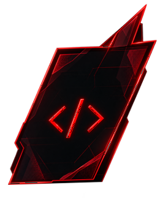

Tecnólogo
Curso superior
01 CURSO
Tecnologia para transformar ideias em soluções digitais.

Curso superior
Duração do Curso
Vespertino/tarde

Campus Zona Sul
02 SOBRE O CURSO
O curso de Desenvolvimento de Software e Multiplataforma forma profissionais preparados para criar soluções tecnológicas para diferentes plataformas, atuando com desenvolvimento web, mobile, cloud e muito mais.

A FATEC Zona Sul combina uma formação sólida, com foco em prática, inovação e conexão com o mercado de trabalho.
03 O QUE VOCÊ VAI APRENDER
04 GRADE CURRICULAR
Uma formação completa, do básico ao avançado, com foco em projetos reais e em desenvolvimento de soluções.
Ver grade curricular
05 MERCADO DE TRABALHO